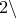

In the previous two chapters, we have seen how the plot command may be used to produce single graphs of functions and datafiles, how the set terminal command can be used to produce graphical output in a wide range of different image formats (see Section 2.1), and how the set papersize command can be used to produce PostScript output to fit on different sizes of paper (see Section 2.3.1). Often, however, there is a need to produce more sophisticated vector graphics. For example, several plots may be wanted side-by-side, or some line-art annotations may be wanted on top of a graph. Additionally, PyXPlot can also produce technical diagrams as well as graphs. In this chapter, we turn our attention to such cases.
Several of the vector graphics commands described in this chapter take rotation angles as one of their inputs. It should be stressed that PyXPlot has two modes for handling angles: they can either be treated as dimensionless numbers or as being an additional base unit within the SI system (see Section 1.6.1). Where the vector graphics commands described in this chapter take rotation angles, a choice is always provided between expressing the angles as dimensionless numbers, measured in degrees, or as quantities with physical dimensions of angle. Thus, the following ways of specifying angles are all valid:
|
set unit angle nodimensionless text "foo" rotate unit(pi*rad) text "foo" rotate 180 text "foo" rotate unit(0.25*revolution) |
as are these ways:
|
set unit angle dimensionless text "foo" rotate 180 text "foo" rotate degrees(pi) |
The following is not valid, because the angle of  is passed to the text command in radians:
|
set unit angle dimensionless text "foo" rotate unit(180*deg) |
![\includegraphics[width=0.9cm]{tick.eps}](images/img-0004.png)
![\includegraphics[width=0.9cm]{cross.eps}](images/img-0006.png)